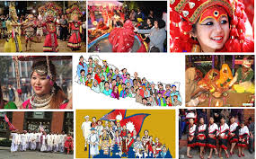

Nepal's tourism thrives on its unparalleled blend of natural beauty, adventure opportunities, and rich culture. From the towering Himalayas, including Mount Everest, to serene valleys and lush jungles, its landscapes are a haven for trekkers, mountaineers, and nature enthusiasts. Adventure seekers can indulge in activities like paragliding, rafting, and bungee jumping. Nepal's cultural heritage shines through ancient temples, monasteries, and historical sites such as Lumbini, the birthplace of Buddha. Festivals like Dashain and Tihar showcase the vibrant traditions and hospitality of the Nepali people. Combined with warm, welcoming locals, Nepal offers a unique and memorable experience for travelers from all walks of life.Nepali culture is a vibrant tapestry woven from centuries of tradition, religion, and ethnic diversity.
 One of the most remarkable aspects of Nepali culture is its warm and sincere hospitality. There is a popular Nepali saying, "Atithi Devo Bhava", meaning "Guests are gods," and it truly reflects the way locals treat visitors. Whether you are staying in a local home, a guesthouse, or just passing through a village, you are likely to be welcomed with a smile, offered food or tea, and treated with genuine kindness. This spirit of hospitality is deeply rooted in the values of respect, generosity, and human connection. Sharing meals, offering help to strangers, and celebrating with guests are everyday practices in Nepalese society. Whether you're exploring bustling cities or trekking through remote mountain villages, you'll find that the warmth of the people often becomes the most memorable part of your journey. Nepali culture and hospitality leave a lasting impression, making visitors feel not just like tourists, but like a part of something deeply meaningful and beautifully human.